My Projects
Here are some of my crochet pieces.
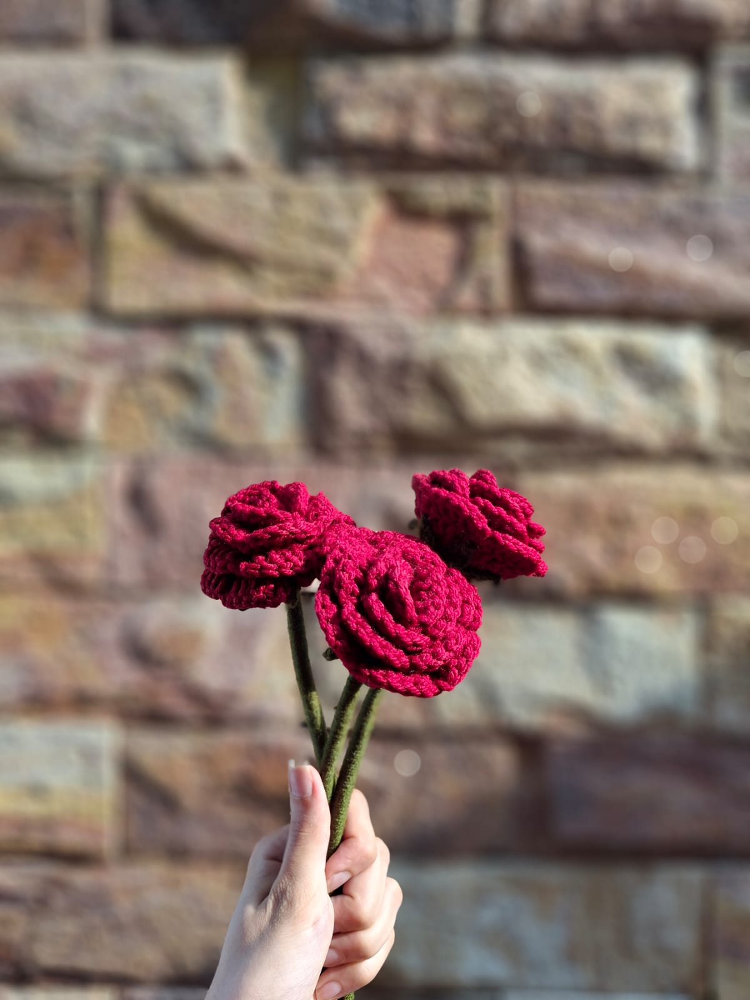
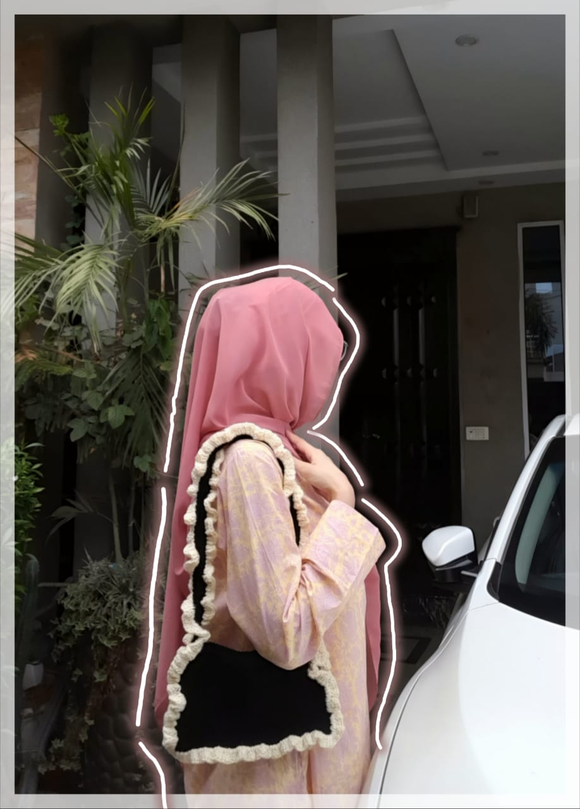
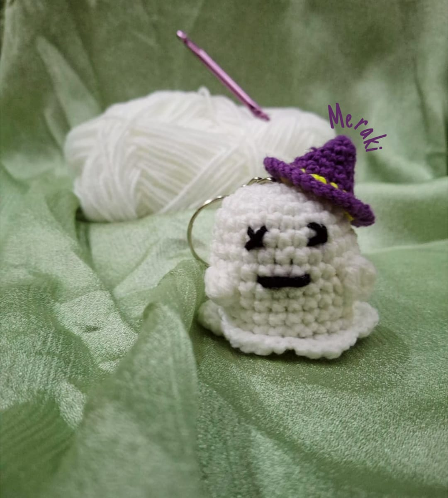
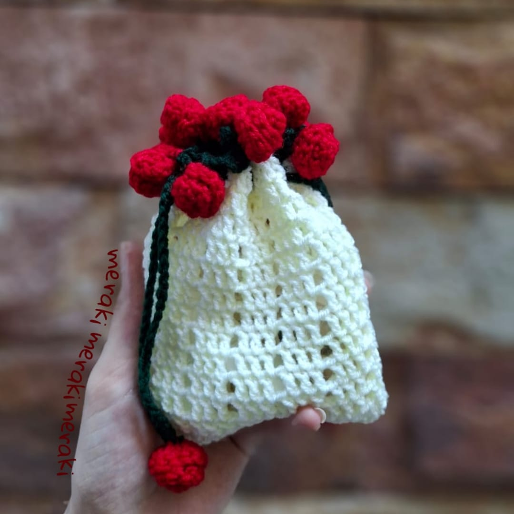
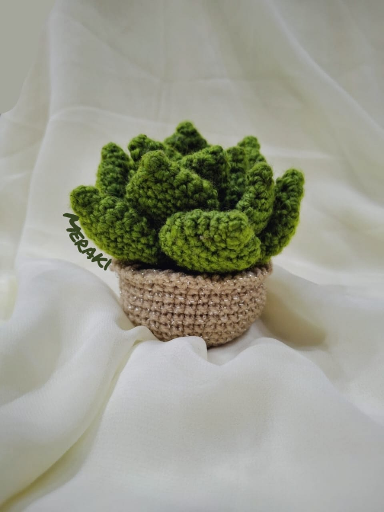
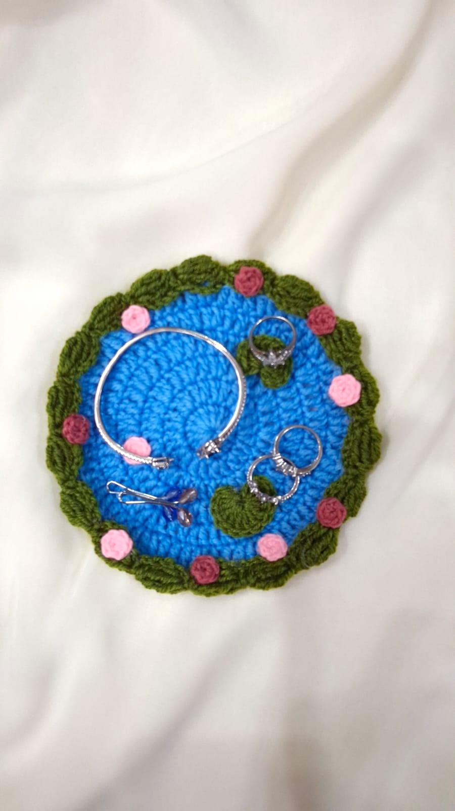
 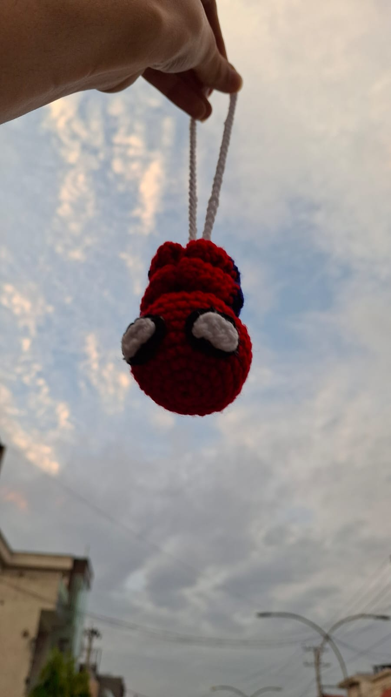
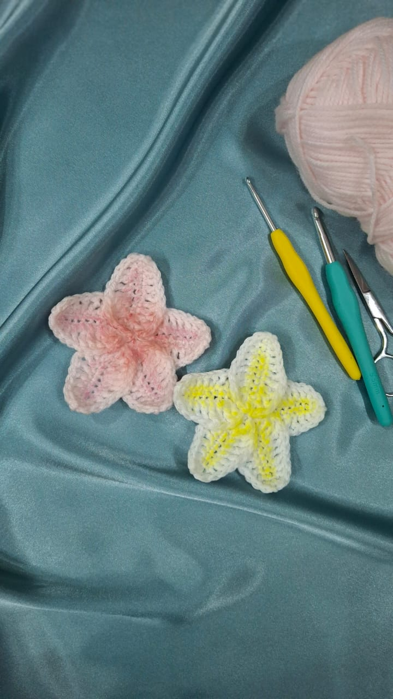
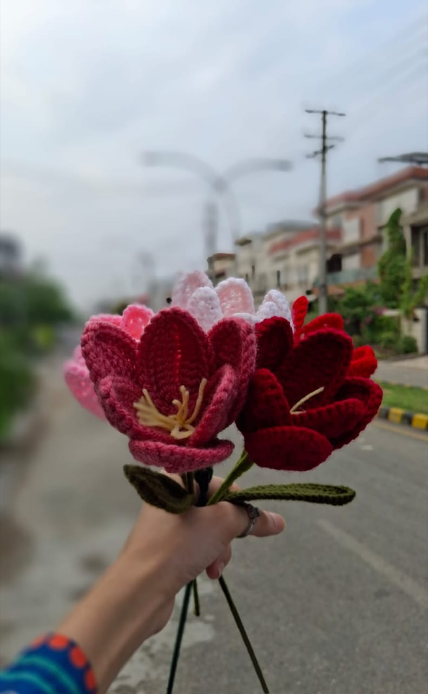
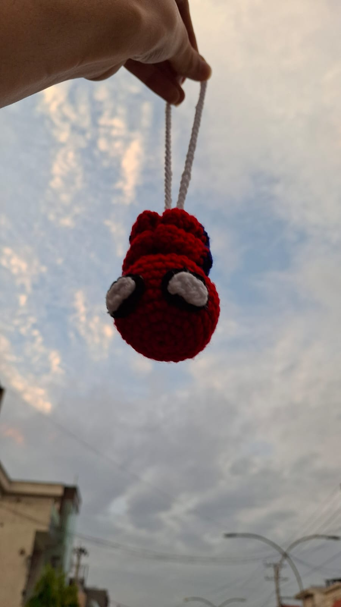
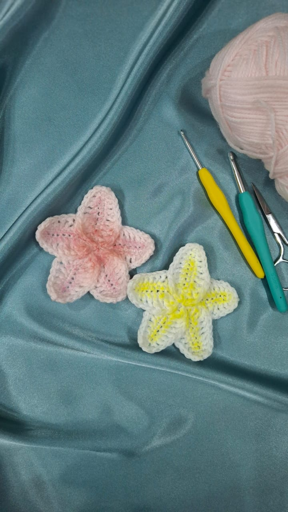
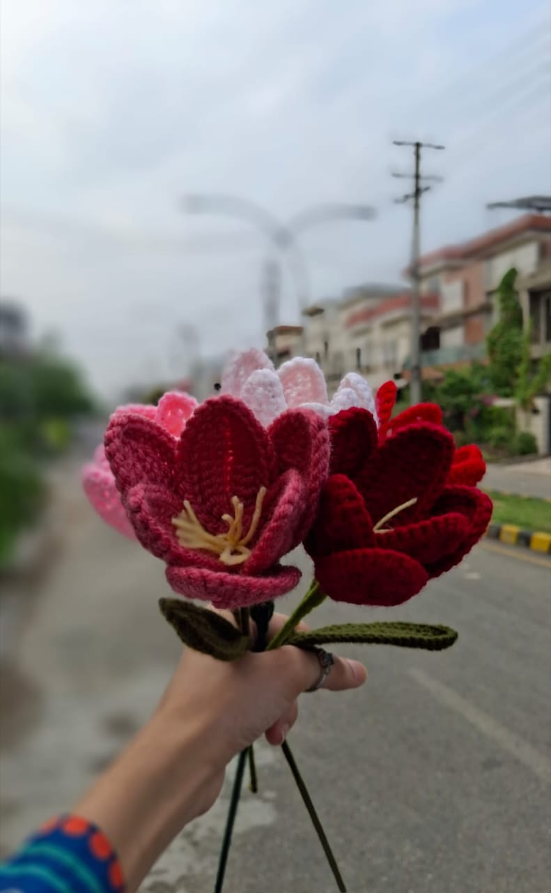
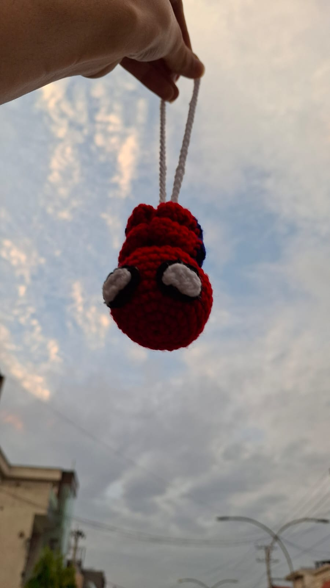
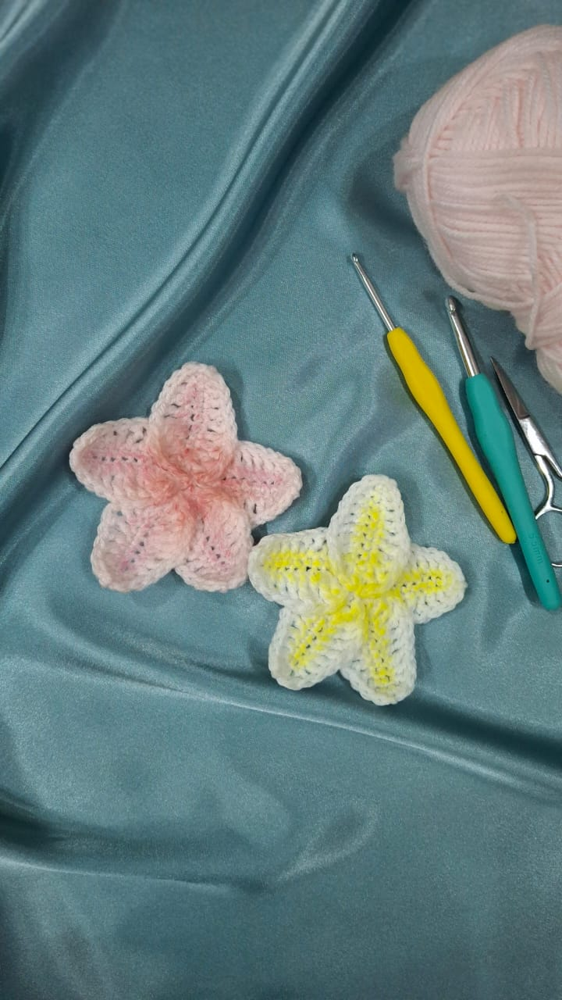
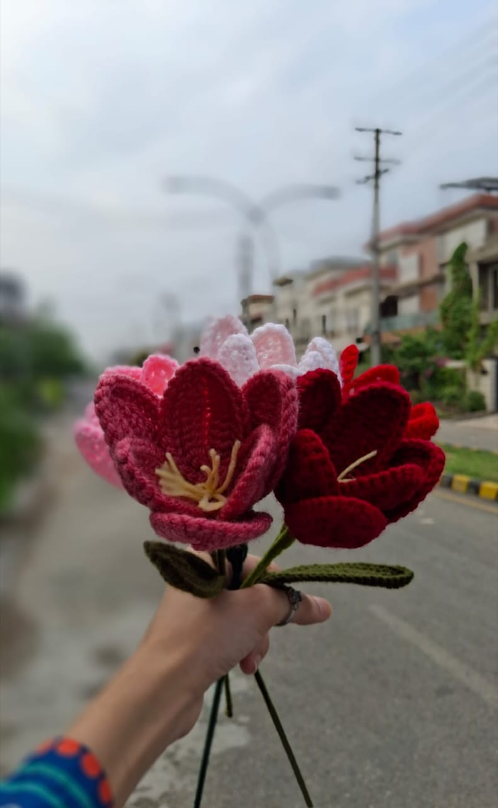
Listen to my favorite crochet playlist:
What I Create:
- Handmade plushies
- Custom tote bags
- Warm scarves and blankets
- Decorative keychains
My favorite crochet book is Edward's Menagerie.